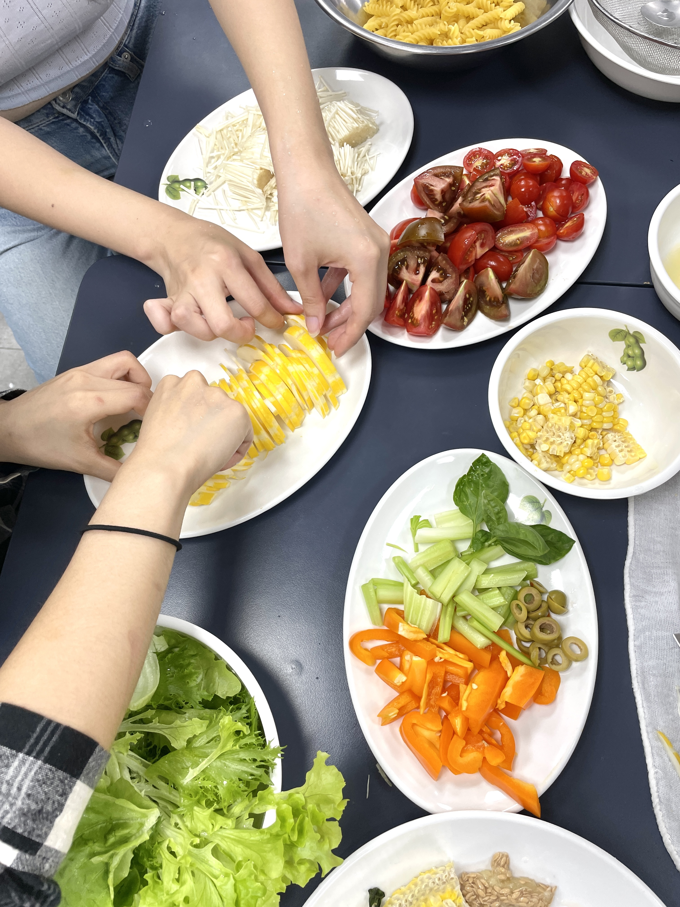

음식으로 연결되는 사회를 꿈꿉니다.
건강한 식문화를 중심으로 고립을 예방하고,
커뮤니티를 만듭니다.
연혁
2026
- 경기도사회적경제원 사회적경제 성장패키지 선정
- KT&G 상상플래닛 입주기업 대상 커뮤니티 프로그램 <식구 되는 날> 운영
- 은평/광명/영등포 청년도전지원사업 소셜 다이닝 프로그램 운영
- 맞춤형 원팬 레시피 추천 서비스 ‘몽땅식탁’ 모바일 어플리케이션 출시(iOS, Android)
2024
- 은평/성동 청년도전지원사업 소셜 다이닝 프로그램 운영
- 서울청년센터 강서 식습관 개선 워크숍 <든든하게> 운영
- 미래에셋 청년 씨드온 Seed-on 프로젝트 연계 소셜 다이닝 프로그램 운영
2023
- 한국사회적기업진흥원 사회적기업가 육성사업 창업팀(13기) 선정
- 여성가족부 「여성·가족·청소년 분야 (예비)사회적기업 비즈니스 아이디어 공모전」 1인 가구 분야 수상
- 고양산업진흥원 4차산업 스타트업 아카데미 1기 선정 및 IR 대회 수상
- 로컬스티치 크리에이터타운 서교 커뮤니티 프로그램 <요리의 기본; 칼질 편> 기획/운영
- 몽땅식탁 주식회사 법인 설립